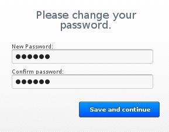

Configure CloudStack
Change Login Password
The first time you login to the installed CloudStack Management node, you will see following webpage:
Click Continue with basic installation, set the password:

At this point, refresh your browser, and you see the login window again, use your newly modified password for login:
After login you will see the same webpage which asks you follow with guide or not, we select I have used CloudStack before, skip this guide button and continue with next setup.
Your webpage listed as following:
CloudStack Global Options
Since we want to use local storage, we have to do following configuration for enable Local Storage.
Hit Global Options button and type in local for searching:
Change the value system.vm.usel to `true:
Restart Cloudstack-management service
# service cloudstack-management restart
Infrasturcture Configuration
Click Infrasturcture, and you will see nothing has been configured yet.
Click View All button under zone:
Click Add zone button:
Select Zone Type:
Configure Zone Info:

Click Next and click Next again to step 4 Add Resources, configure the start/end IP Arrange:
Continue configure Guest Traffic:
Configure cluster name:
Add host:
Add Secondary Storage:
Hit Launch , and you will see zone/pod created, host has been added into cluster.
End Of The Section
Now the cloudstack manually deployment finished, in next section we will discuss on how to use CloudMonkey for automatically create zone/pod/cluster.